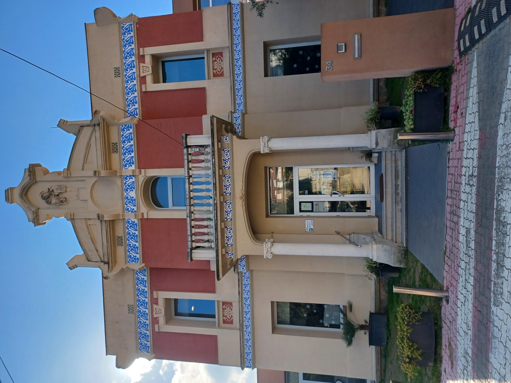
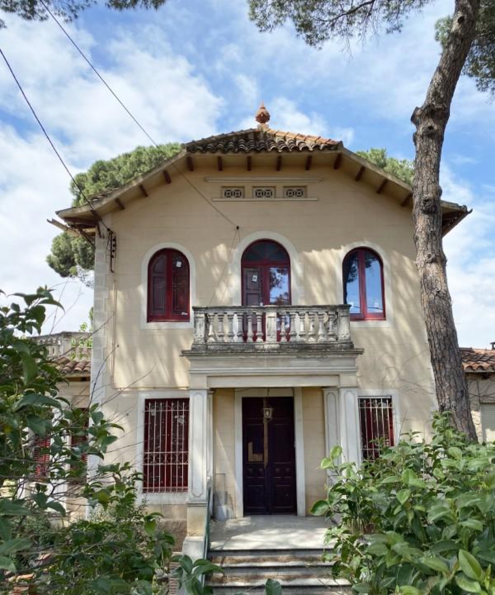
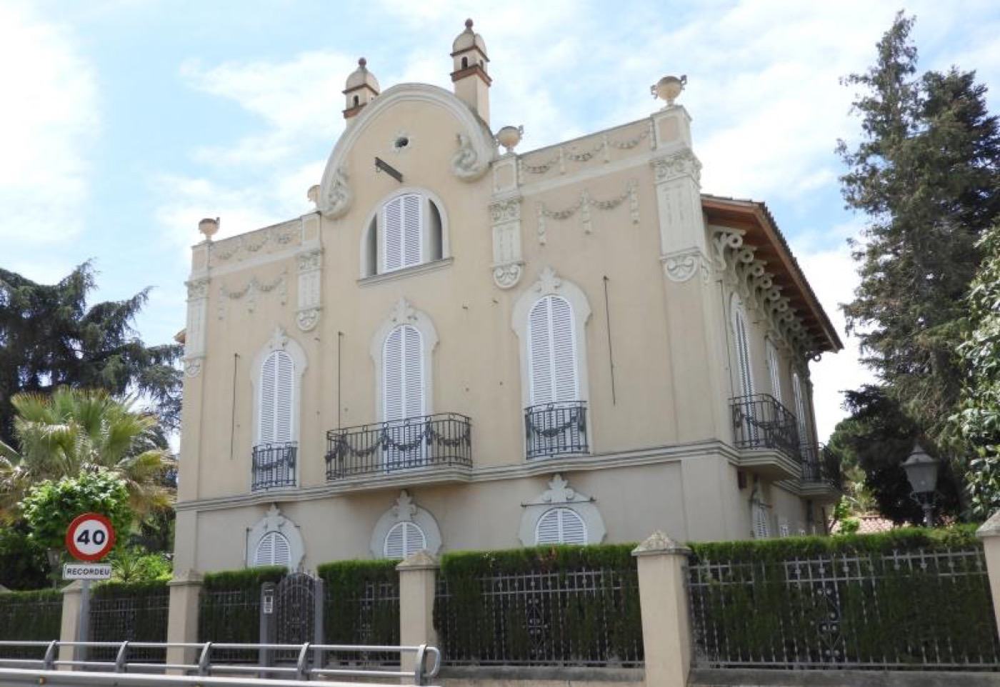
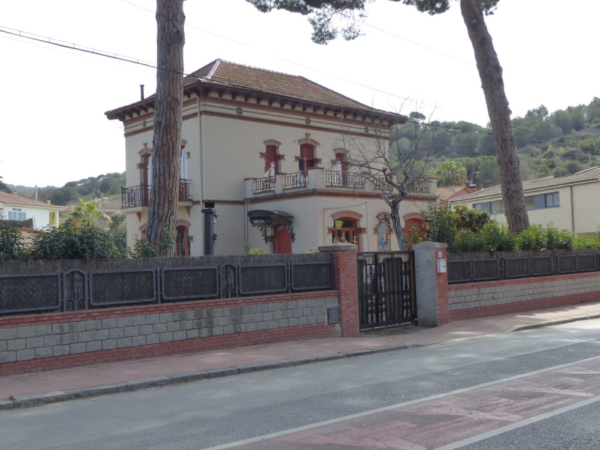
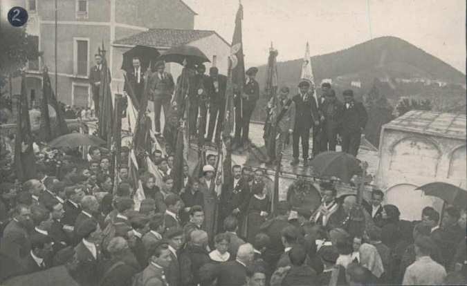
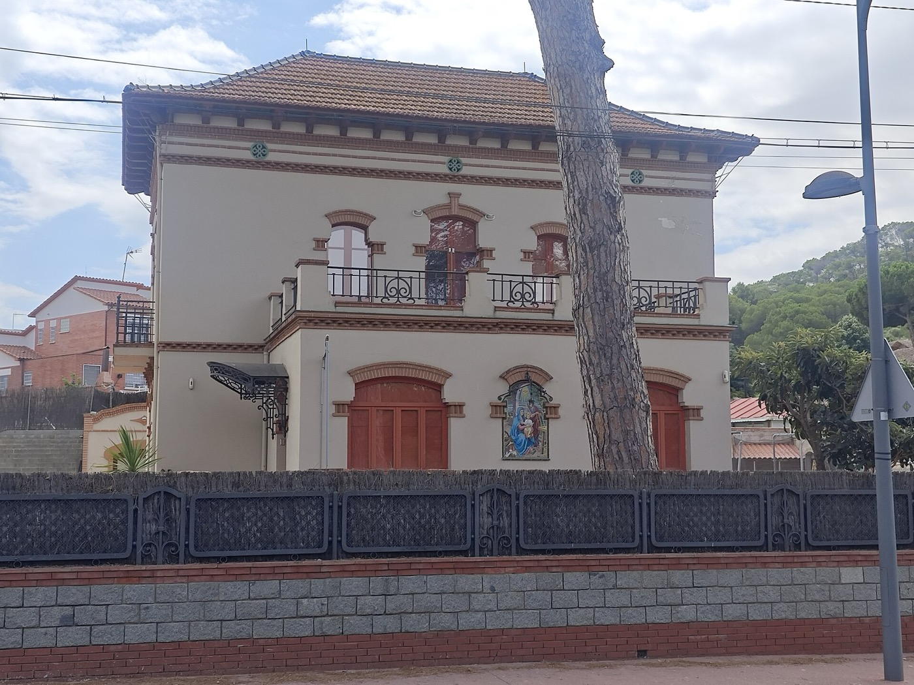
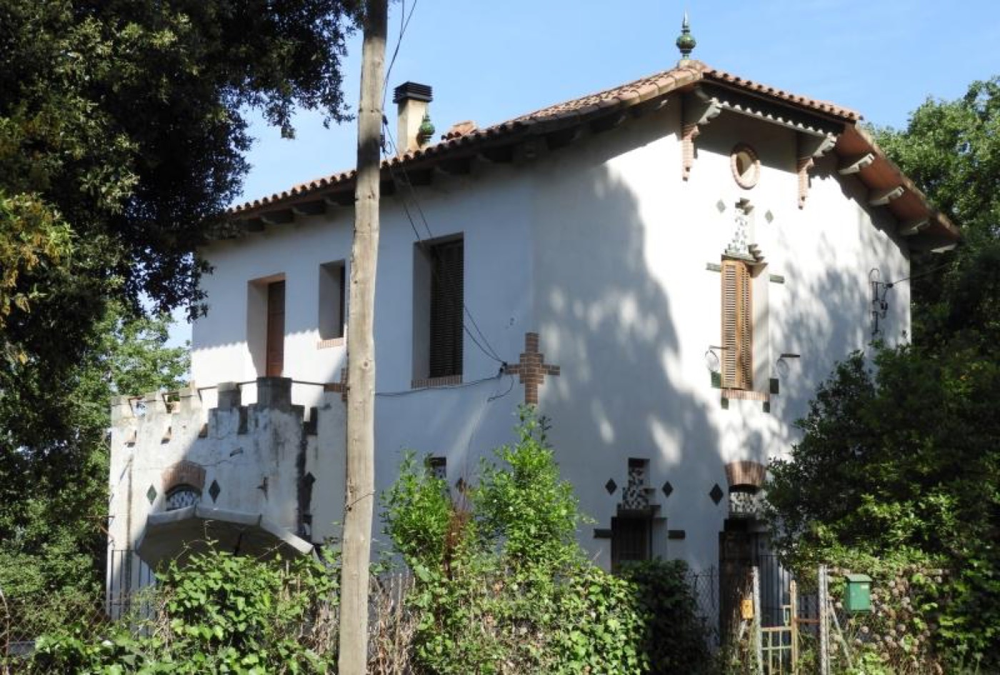
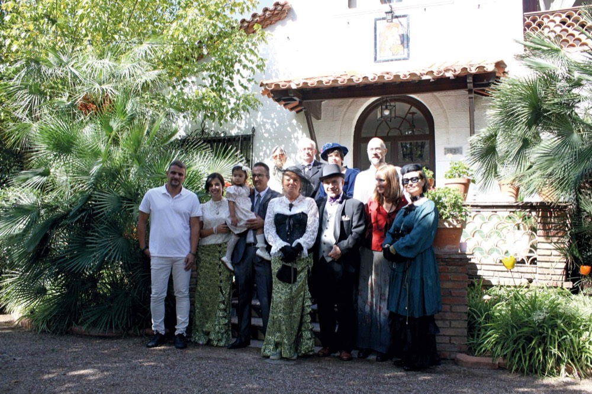

Ens presentem amb el modernisme i noucentisme com a porta d'entrada a la història del nostre poble. Volem endinsar-nos a la memòria, el patrimoni i cultura local. Vols formar-hi part? Què saps de Sant Fost?


Ahir i Avui neix de la il·lusió de dues veïnes de Can Calet i Can Coromines per conèixer millor les cases d'època del poble, la seva arquitectura i les històries que amaguen.
Aquella curiositat va anar creixent fins a convertir-se, primer en una Festa Modernista, i després en un projecte col·lectiu.
«Conèixer d'on venim ens ajuda a entendre qui som avui.»

La missió de l'associació és promoure l'interès, el respecte i el coneixement pel patrimoni arquitectònic i cultural de Sant Fost.
L'espurna que encén la focalització pel modernisme i noucentisme vol donar cabuda a una història més àmplia, d'altres estils i altres èpoques.

Promovem una comunitat coneixedora del seu entorn, que valori i senti com a propi el seu patrimoni i que això li proporcioni més eines per poder decidir què transmetre al futur.
Masies, fonts, pou de glaç, vestigis gairebé invisibles expliquen com ha anat canviant Sant Fost. Tria un punt del plànol per veure'n la fitxa.
A la fi del segle XIX Sant Fost va ser reconegut com a poble ideal per a estiuejar. Algunes famílies de Barcelona es van construir cases de l'època. En aquells moments l'arquitecte Mariano Romaní va desenvolupar diversos projectes arquitectònics al poble.
La celebració de la primera festa modernista del 2026 va permetre exposar una mostra il·lustrada dedicada a les cases de Mariano Romaní. També es va editar una auca sobre el Prat d'en Jeroni.


La vitrina és una revista on es recull la memòria, patrimoni i cultura local, amb els ulls posats tant en l'ahir com en l'avui.

Sabem que hi ha moltes històries que no es troben en cap document.
Pretenem recollir els records, històries i anècdotes sobre el nostre poble.
En saps d'alguna? Saps d'algú que volgués explicar alguna experiència?

A l'abril del 2026 es va celebrar la primera festa modernista i noucentista per a connectar amb la història i conèixer de prop la forma de vida del segle XIX. Es va ambientar amb elements i indumentària de l'època: representació teatral, cantada de l'auca, jocs infantils d'època, exposició de pintura, tallers...
La voluntat de l'associació és que la Festa Modernista es converteixi en una cita anual, amb noves edicions i activitats que s'aniran anunciant. Si vols rebre'n avisos, posa't en contacte amb nosaltres.
La ciutadania és una part essencial del projecte. Qualsevol aportació pot convertir-se en la propera peça d'aquest trencadís col·lectiu.